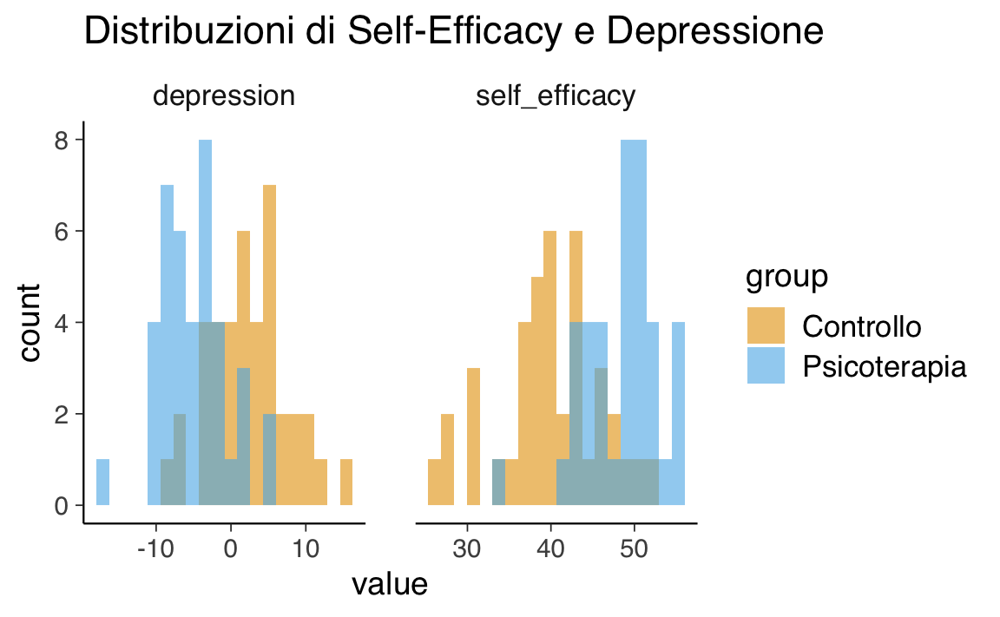
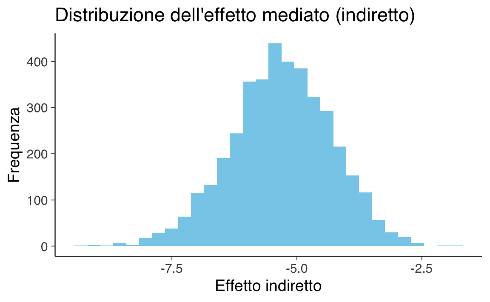

here::here("code", "_common.R") |>
source()
library(brms)Introduzione
Preparazione del Notebook
In psicologia, spesso ci chiediamo se un intervento funzioni: ad esempio, una nuova psicoterapia riduce davvero i sintomi della depressione rispetto a un gruppo di controllo?
Il metodo tradizionale (frequentista) si limita solitamente a confrontare la media dei punteggi nei due gruppi e calcolare un “p-value”, che indica quanto sarebbe raro osservare una differenza almeno così grande se l’intervento non avesse alcun effetto.
Tuttavia, questo approccio ha limiti importanti:
- non ci dice quanto è probabile che l’intervento sia davvero efficace;
- non considera le nostre conoscenze pregresse o ipotesi teoriche;
- soprattutto, non ci aiuta a capire come e perché l’intervento funziona.
L’approccio bayesiano offre una prospettiva diversa e più potente, soprattutto quando vogliamo andare oltre il semplice “funziona/non funziona”.
Approccio frequentista: la differenza tra medie
L’approccio classico prevede questi passaggi:
- si confronta la media di una variabile (es. depressione) tra gruppo sperimentale e gruppo di controllo;
- si calcola un “p-value” per valutare se la differenza osservata può essere dovuta al caso.
Limiti principali:
- si limita a dire se la differenza è “statisticamente significativa”;
- non ci dice nulla sulla probabilità che l’intervento funzioni realmente;
- non ci permette di modellizzare i processi sottostanti: cosa succede tra l’intervento e l’esito?
Approccio bayesiano: modellizzare il processo
L’approccio bayesiano permette di:
- formulare modelli più complessi, includendo variabili intermedie (mediatori, moderatori), processi psicologici, o conoscenze pregresse;
- ottenere direttamente la probabilità dei parametri del modello, date le osservazioni e le nostre convinzioni a priori;
- interpretare in modo intuitivo e trasparente i risultati (es: “con il 95% di credibilità, l’intervento riduce i sintomi almeno di X punti”).
Un esempio concreto.
Supponiamo che una nuova psicoterapia funzioni aumentando la self-efficacy, che a sua volta riduce la depressione. Questa ipotesi può essere testata direttamente con un modello di mediazione.
Esempio numerico in R
Simuliamo dati per due gruppi:
- gruppo controllo (nessuna terapia),
- gruppo psicoterapia,
e una variabile mediatrice: self-efficacy.
set.seed(42)
n_per_group <- 40
n <- n_per_group * 2
# Gruppo: 0 = controllo, 1 = psicoterapia
group <- rep(c(0, 1), each = n_per_group)
# Simula self-efficacy (più alta nel gruppo psicoterapia)
self_efficacy <- rnorm(n, mean = 40 + 8 * group, sd = 5)
# Simula depressione (diminuisce se aumenta self-efficacy)
depression <- rnorm(n, mean = 30 - 0.7 * self_efficacy, sd = 4)
dati <- tibble(
group = factor(group, labels = c("Controllo", "Psicoterapia")),
self_efficacy,
depression
)
dati |> head()
#> # A tibble: 6 × 3
#> group self_efficacy depression
#> <fct> <dbl> <dbl>
#> 1 Controllo 46.9 3.25
#> 2 Controllo 37.2 5.01
#> 3 Controllo 41.8 1.08
#> 4 Controllo 43.2 -0.699
#> 5 Controllo 42.0 -4.19
#> 6 Controllo 39.5 4.82dati %>%
pivot_longer(cols = c(self_efficacy, depression)) %>%
ggplot(aes(x = value, fill = group)) +
geom_histogram(alpha = 0.6, position = "identity", bins = 20) +
facet_wrap(~name, scales = "free_x") +
labs(title = "Distribuzioni di Self-Efficacy e Depressione")
Approccio classico: differenza tra medie
dati %>%
group_by(group) %>%
summarise(
media_depressione = mean(depression),
sd_depressione = sd(depression)
)
#> # A tibble: 2 × 3
#> group media_depressione sd_depressione
#> <fct> <dbl> <dbl>
#> 1 Controllo 2.33 5.31
#> 2 Psicoterapia -4.91 4.49Approccio bayesiano: modello di mediazione
Effetto del trattamento su self-efficacy
fit1 <- brm(
self_efficacy ~ group,
data = dati,
family = gaussian(),
seed = 42,
refresh = 0,
backend = "cmdstanr"
)summary(fit1)
#> Family: gaussian
#> Links: mu = identity; sigma = identity
#> Formula: self_efficacy ~ group
#> Data: dati (Number of observations: 80)
#> Draws: 4 chains, each with iter = 2000; warmup = 1000; thin = 1;
#> total post-warmup draws = 4000
#>
#> Regression Coefficients:
#> Estimate Est.Error l-95% CI u-95% CI Rhat Bulk_ESS
#> Intercept 39.80 0.87 38.11 41.52 1.00 3757
#> groupPsicoterapia 8.61 1.23 6.08 10.97 1.00 3785
#> Tail_ESS
#> Intercept 2700
#> groupPsicoterapia 2904
#>
#> Further Distributional Parameters:
#> Estimate Est.Error l-95% CI u-95% CI Rhat Bulk_ESS Tail_ESS
#> sigma 5.48 0.46 4.68 6.45 1.00 4022 2955
#>
#> Draws were sampled using sample(hmc). For each parameter, Bulk_ESS
#> and Tail_ESS are effective sample size measures, and Rhat is the potential
#> scale reduction factor on split chains (at convergence, Rhat = 1).Effetto di self-efficacy su depressione (mediazione)
fit2 <- brm(
depression ~ self_efficacy + group,
data = dati,
family = gaussian(),
seed = 42,
refresh = 0
)summary(fit2)
#> Family: gaussian
#> Links: mu = identity; sigma = identity
#> Formula: depression ~ self_efficacy + group
#> Data: dati (Number of observations: 80)
#> Draws: 4 chains, each with iter = 2000; warmup = 1000; thin = 1;
#> total post-warmup draws = 4000
#>
#> Regression Coefficients:
#> Estimate Est.Error l-95% CI u-95% CI Rhat Bulk_ESS
#> Intercept 26.90 3.15 20.75 33.08 1.00 3508
#> self_efficacy -0.62 0.08 -0.77 -0.47 1.00 3207
#> groupPsicoterapia -1.94 1.06 -3.94 0.13 1.00 3174
#> Tail_ESS
#> Intercept 3137
#> self_efficacy 2924
#> groupPsicoterapia 2833
#>
#> Further Distributional Parameters:
#> Estimate Est.Error l-95% CI u-95% CI Rhat Bulk_ESS Tail_ESS
#> sigma 3.70 0.31 3.16 4.35 1.00 3696 3063
#>
#> Draws were sampled using sampling(NUTS). For each parameter, Bulk_ESS
#> and Tail_ESS are effective sample size measures, and Rhat is the potential
#> scale reduction factor on split chains (at convergence, Rhat = 1).Stima dell’effetto indiretto (mediazione bayesiana)
# Estrai i coefficienti posteriori
post_fit1 <- as_draws_df(fit1)
post_fit2 <- as_draws_df(fit2)
a <- post_fit1$b_groupPsicoterapia
b <- post_fit2$b_self_efficacy
# Distribuzione dell'effetto mediato
indirect <- a * b
# Statistiche descrittive
mean(indirect)
#> [1] -5.313
quantile(indirect, probs = c(0.025, 0.975))
#> 2.5% 97.5%
#> -7.366 -3.440
# Visualizzazione dell'effetto mediato
tibble(indirect = indirect) %>%
ggplot(aes(x = indirect)) +
geom_histogram(bins = 30, fill = "skyblue") +
labs(title = "Distribuzione dell'effetto mediato (indiretto)",
x = "Effetto indiretto", y = "Frequenza")
Conclusioni e vantaggi dell’approccio bayesiano
- L’approccio bayesiano consente di testare modelli espliciti sui processi psicologici, andando oltre la semplice differenza tra medie.
- Possiamo ottenere stime credibili dell’effetto indiretto (mediazione), e capire come funziona un intervento.
- I risultati sono espressi in modo trasparente: “con il 95% di credibilità, l’intervento riduce la depressione tramite l’aumento della self-efficacy almeno di X punti”.
Messaggio chiave
- Il vero progresso nella ricerca psicologica non sta solo nel dimostrare che un intervento funziona, ma nel comprendere come e perché funziona.
- L’approccio bayesiano ci offre gli strumenti per rispondere a queste domande.
Oltre la differenza tra medie: inferenza bayesiana nei modelli semplici
In questa sezione della dispensa, esamineremo l’inferenza bayesiana applicata a modelli statistici in cui si stima un unico parametro scalare, ovvero quando l’estimando \(\theta\) è unidimensionale.
Questa situazione si presenta molto spesso in psicologia e nelle scienze sociali: pensiamo, ad esempio, a quando ci interessa stimare una proporzione (ad esempio, la percentuale di pazienti che risponde a un trattamento), una media (il livello medio di ansia in una popolazione), una frequenza attesa di eventi rari (come il numero di ricadute in un mese), o la durata media di un fenomeno.
In particolare, considereremo quattro modelli fondamentali e ampiamente utilizzati:
- il modello binomiale, adatto alla stima di proporzioni e probabilità di successo in una serie di prove;
- il modello normale (o gaussiano), impiegato per la stima di medie e varianze di variabili continue;
- il modello di Poisson, utilizzato per modellizzare il numero di eventi che si verificano in un intervallo di tempo o spazio;
- il modello esponenziale, utile per descrivere il tempo che intercorre tra eventi.
Per ciascuno di questi modelli, approfondiremo il processo di aggiornamento bayesiano, ovvero il modo in cui le informazioni contenute nei dati (la verosimiglianza) vengono integrate con le conoscenze pregresse (la distribuzione a priori) per ottenere una nuova distribuzione che rappresenta il nostro stato di conoscenza dopo aver osservato i dati: la distribuzione a posteriori.
Analizzeremo due approcci principali per derivare la distribuzione a posteriori:
- l’approssimazione numerica tramite il metodo a griglia, che permette di calcolare la distribuzione a posteriori anche quando non è disponibile una soluzione analitica;
- l’impiego delle distribuzioni coniugate, in cui una specifica combinazione tra distribuzione a priori e verosimiglianza consente di ottenere la distribuzione a posteriori in forma chiusa e calcolabile analiticamente.
Inoltre, esploreremo l’influenza della scelta della distribuzione a priori sulla distribuzione a posteriori e discuteremo le tecniche per sintetizzarla e interpretarla in modo efficace, ad esempio attraverso l’uso di intervalli di credibilità, funzioni di densità, o la presentazione grafica della distribuzione stessa.
Un aspetto cruciale dell’inferenza bayesiana, particolarmente rilevante nel contesto della crisi della replicabilità in psicologia, è la possibilità di formulare inferenze sulla distribuzione a posteriori dei parametri di interesse teorico senza dover ricorrere a decisioni binarie come “significativo” o “non significativo”. Questo approccio promuove una modalità di analisi più sfumata, trasparente e rigorosa, permettendo ai ricercatori di esprimere risultati in termini di probabilità credibili, invece che di semplici accettazioni o rifiuti di ipotesi.
L’obiettivo è quello di stabilire un nuovo standard per la presentazione e l’interpretazione dei risultati, favorendo affermazioni più ponderate e informative nelle ricerche empiriche (Gelman et al., 1995; McElreath, 2020).
Bibliografia
Gelman, A., Carlin, J. B., Stern, H. S., & Rubin, D. B. (1995). Bayesian data analysis. Chapman; Hall/CRC.
McElreath, R. (2020). Statistical rethinking: A Bayesian course with examples in R and Stan (2nd Edition). CRC Press.